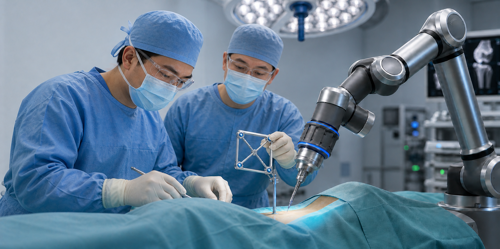

Established Orthopedic System
A long-running public hospital system with orthopedics as a defining clinical strength.

Joint replacement, sports medicine, and joint-preservation care through Beijing JST, also known as Beijing Jishuitan Hospital.
Beijing JST combines a long-established hospital system, national orthopedic leadership, large clinical volume, and research strength in orthopedics and sports medicine.
A long-running public hospital system with orthopedics as a defining clinical strength.
Recognized as China's leading orthopedic specialty for 13 consecutive years.
Three Beijing campuses support inpatient surgery, recovery, and specialist coordination.
Large outpatient and surgical volume supports real-world orthopedic experience.
Research, training, sports medicine, and innovation support advanced joint care.
JST's sports medicine mindset is simple: protect the natural joint as early as possible, then escalate only when imaging, symptoms, and function show that a stronger intervention is needed.
Review MRI, X-ray, CT, gait, pain pattern, and activity goals before recommending a surgical path.
Prioritize sports medicine, soft-tissue repair, rehabilitation, and minimally invasive options where appropriate.
For selected patients, alignment correction or partial reconstruction can reduce overload.
When replacement is right, planning focuses on implant position, joint balance, and long-term function.
Robotic-assisted orthopedic surgery can support highly precise planning and alignment for complex hip and knee procedures, while helping surgeons use smaller, less invasive approaches that may support faster recovery and earlier return to mobility.

Sub-millimeter precision and alignment Advanced imaging and robotic guidance help surgeons plan and position implants with exceptional accuracy.
Minimal invasion Smaller, more targeted surgical access can help reduce tissue disruption during eligible procedures.
Faster recovery and better mobility Precise planning and less invasive technique may support smoother rehabilitation and improved movement after surgery.
Talk to our case consultant and surgeon to get your personalized treatment plan and fee schedules.